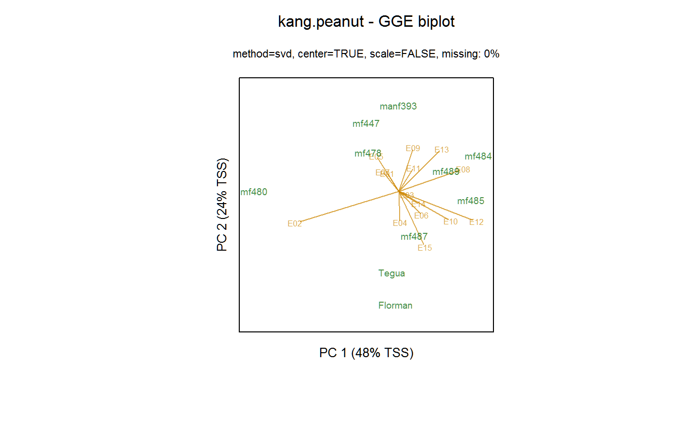

kang.peanut.RdPeanut yields for 10 genotypes in 15 environments
data("kang.peanut")
A data frame with 590 observations on the following 4 variables.
gengenotype factor, 10 levels
repreplicate factor, 4 levels
yieldyield
envenvironment factor, 15 levels
Florman, Tegua, mf484, mf485, mf487, mf489 have a long crop cycle. The others have a short crop cycle.
This data is also likely used in Casanoves et al 2005, "Evaluation of Multienvironment Trials of Peanut Cultivars", but this appears to be a slightly smaller subset (only 10 genotypes, and perhaps only the years 96,97,98,99). Based on the d.f. in their table 5, it appears that environment E13 was grown in 1998. (5 loc * (4-1) = 15, but the table has 14, and 98-99 had only 3 reps instead of 4 reps.)
Data from National Institute of Agricultural Technology, Argentina.
M. S. Kang, M. Balzarini, and J. L. L. Guerra (2004). Genotype-by-environment interaction". In: A. Saxton (2004). "Genetic Analysis of Complex Traits Using SAS".
Johannes Forkman, Julie Josse, Hans-Peter Piepho (2019). Hypothesis Tests for Principal Component Analysis When Variables are Standardized. JABES https://doi.org/10.1007/s13253-019-00355-5
# \dontrun{ library(agridat) data(kang.peanut) dat <- kang.peanut # Table 5.1 of Kang et al. (Chapter 5 of Saxton) libs(reshape2) Y0 <- acast(dat, env~gen, value.var='yield', fun=mean) round(Y0,2)#> Florman Tegua manf393 mf447 mf478 mf480 mf484 mf485 mf487 mf489 #> E01 0.80 0.96 1.24 0.95 1.37 1.41 1.16 1.12 0.87 1.11 #> E02 2.17 2.04 1.57 1.29 2.15 3.27 1.08 0.58 1.52 0.86 #> E03 2.43 2.58 2.47 2.34 2.19 2.19 2.64 2.24 2.30 2.20 #> E04 2.71 2.26 1.77 1.61 2.15 2.04 2.14 1.88 1.72 2.18 #> E05 1.13 1.14 1.55 1.86 1.98 1.61 1.71 0.85 1.24 1.21 #> E06 3.08 3.22 2.90 2.59 2.36 2.43 3.05 2.90 2.94 2.57 #> E07 2.81 2.88 2.96 3.41 3.20 2.96 2.91 2.53 2.73 2.90 #> E08 1.74 1.73 2.16 1.44 2.20 0.95 2.86 2.13 1.60 2.29 #> E09 2.16 2.44 3.30 3.01 3.37 2.53 2.73 3.00 3.18 3.25 #> E10 4.29 4.21 3.55 3.84 3.53 3.22 4.45 4.46 4.24 4.03 #> E11 1.82 1.71 2.16 1.88 2.09 1.91 2.53 1.86 1.71 2.27 #> E12 5.33 4.93 4.69 4.16 4.70 3.57 5.57 5.43 4.99 4.67 #> E13 1.18 1.32 2.24 1.63 1.54 1.15 2.45 1.78 1.54 2.00 #> E14 4.39 4.40 4.13 3.79 4.33 3.72 4.28 3.77 4.17 4.75 #> E15 3.41 3.45 2.22 2.46 3.09 2.61 2.81 3.15 3.84 3.54# GGE biplot of Kang, p. 82. libs(gge) m1 <- gge(dat, yield~gen*env, scale=FALSE) biplot(m1, flip=c(1,1), main="kang.peanut - GGE biplot")# Forkman 2019, fig 2 # m2 <- gge(dat, yield~gen*env, scale=TRUE) # biplot(m2, main="kang.peanut - GGE biplot") # biplot(m2, comps=3:4, main="kang.peanut - GGE biplot") # }